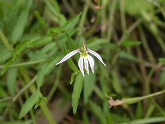

半邊蓮
學名：Lobelia chinensis Lour.
科名：桔梗科
別名：水仙花草、拈力仔草、鐮歷仔草、半邊荷花
原產地：中國、中南半島、琉球及日本。
特徵：
為多年生草本植物，光滑無毛，有乳汁，莖呈匍匐狀，莖節著地長出鬚根，葉互生，無柄，為披針形，全緣或有疏齒，花生於葉腋，單生，為淡紫色或白色，花冠基部合成管狀，上半部偏向一側裂開成5片，雄蕊5枚，果實為蒴果，頂端2瓣開裂。
用途：
分布於平地至低海拔地區，生長於溝渠、田邊、池邊濕地或休耕土地。